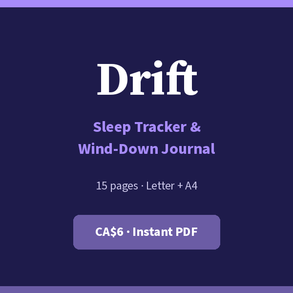
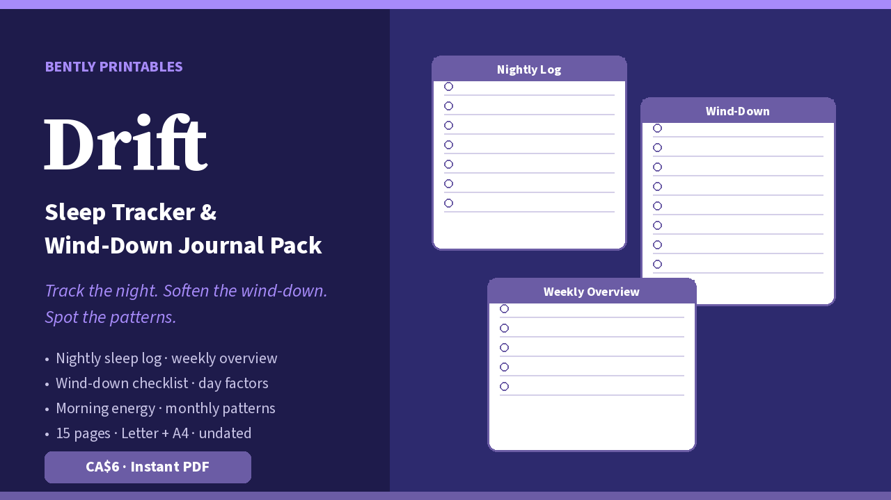

Free nightly sleep log
Track the night. Soften the wind-down. Spot the patterns.

One printable page: bedtime, wake time, sleep quality, night wakings, wind-down notes, day factors, and morning energy. Undated — start tonight.
Download free PDF
What’s on the free page
Want the whole Drift system? Drift: Sleep Tracker & Wind-Down Journal Pack — CA$6: 15 pages — nightly logs, wind-down checklist, day factors, dream notes, morning energy, weekly + monthly patterns, blank masters. Letter + A4. Get it on Gumroad →
- Bedtime · wake · hours · quality 1–5
- Night wakings + wind-down notes
- Quick day-factor checks (caffeine, screens…)
- Morning energy rating · US Letter
What’s in the full pack
- Nightly Sleep Log (multiple blanks)
- Wind-Down Ritual Checklist
- Day Factors Log (caffeine · alcohol · screens)
- Dream Notes (optional) + Morning Energy Check
- Weekly Sleep Overview ×2
- Monthly Sleep Pattern page
- Sleep Goals & Environment checklist
- Lined notes · dot grid · blank master
- US Letter and A4 PDFs · personal use

Print tips
Regular paper is fine. Keep a stack by the bed or on a clipboard. Not medical advice and not a sleep-disorder diagnostic — if sleep problems persist, talk to a healthcare professional.